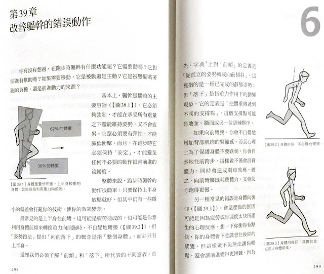

「力」與「體重」的概念

上星期在青島進行今年最後一次的 Pose Method Level 1 的教練課，因為學員提問，所以在課堂上仔細針對「力」(Force)的定義進行了詳細的闡述，以及把它跟其他概念進行連結。其中最重要的概念就是「體重」(Body Weight)。
力，就是體重。
體重非定值，它是會變化的。就好比我們站在體重計上，不管是上肢還是下肢做出動作時，體重計上的數值都會改變。
動物有肌纖維，植物也有纖維。兩者之間的差別顯而易見；但大多數人常會忽視兩種纖維之間的共同特性，那是什麼呢？如果我們深入思考，會得到一個很有趣的答案：「支撐體重」。
在熱帶雨林裡的植物，為了爭取更多的陽光，必須盡量向上生長，長得慢的就無法進行足夠的光合作用。長得愈高，樹幹就必須要有足夠強韌的纖維來支撐它自身的重量。枝葉長得愈繁茂，樹幹也必須愈加粗壯才能撐得住自身的重量，這就好比體型愈龐大的動物，需要演化出同樣粗壯的腿部來支撐自身的體重一樣。當動物處於靜止狀態時，肌肉的角色就好比植物的纖維，它仍需要用力，但用力的目的是在「支撐體重」與「維持姿勢」。完成這兩項任務的組織不只有肌肉，還有骨骼和結締組織(例如「筋膜」)。
例如站立不動的姿勢，下肢的肌肉需要用來支撐自身的體重，上半身的肌肉則要維持直立的姿勢。
靜止狀態的肌肉所需承擔的重量是：一倍體重。「一倍體重」正是靜止狀態下肌肉、骨骼和結締組織所要承擔的重量大小。在靜止狀態下，雖然都是一倍體重，但在不同姿勢下身體保持平衡、維持穩定的難度也會不一樣。在同樣一倍體重，支撐點愈少，難度愈高。所以躺姿是最輕鬆的，因為支撐面積最大；單腳站則比雙腳站更難保持平衡與維持穩定。
雖然支撐點相同，因身體其他部位的「姿勢不同」，也使平衡與穩定的難度增加。以雙腳支撐為例，立正的站姿、直膝硬舉預備姿勢與深蹲姿勢都是用雙腳支撐一倍體重，但需要的體能、以及可以維持穩定與平衡的時間會有很大的差距。因為姿勢不同，造成支撐體重與維持平衡的難度增加。
以直膝硬舉預備姿勢來說，因為髖關節彎曲後，小腿、後大腿與背部要比直立時用更多力氣才能維持軀體前彎的姿勢。再看最難持久的深蹲姿勢，此時髖、膝、踝三關節都同時彎曲了，小腿、大腿與軀幹之間形成各種角度，因此下肢的肌肉必須要比直膝時更用力，才能維持各槓桿之間的平衡。
前面已經提過：體重，是會變動的。想像一下你正站在體重計上面手舞足蹈時，體重計上的數值就會一直改變。動作的幅度愈大，姿勢改變愈快，數值也會有更大幅度的變化。比如說你用力往前揮拳或上下跳動時，體重計上的數值的變化也會愈大。
在物理學的教科書裡，對「力量」的定義是：「物體之間相互接觸時互相作用的強度大小。(The magnitude of Interaction between material bodies.)」牛頓第二運動定律所定義的 F 是「質量」和「加速度」的乘積 (F=ma)，在地球上我們一直受到「重力加速度」的作用，所以在靜止的站姿狀態下，雙腿所要用的力(F)，就是一倍體重(mg)。在身體質量(m)不變的情況下，當我們快速改變姿勢時，「加速度(a)」改變了，體重計上的數值(F)也會跟著變化。從這個觀點來看：力量(F)，其實就是體重(body weight)。
我們再回到體重計上的數值來思考，如果我們用力踩體重計，數值一樣會變化。「下踩/推蹬/蹬地」一樣是我們可以執行的動作，但這個動作跟專注在上半身去轉移體重兩者之間，何種方式比較效率？比較不容易受傷？
平均來說，我們的上半身佔了 62%的體重，下半身是 38%的體重，當我們要「使力」(快速轉移體重)時，是把移動上半身還是下半身比較快、比較容易、比較持久呢？
雖然下半身比較有力，但它的上面還承載著 62%的體重，所以移動起來的反應會比上半身「慢」。當然，當我們在移動上半身時，下半身也要去支撐變大的體重(就像垂直跳擺臂時下肢所受的力就會變大)。轉移體重的速度愈快，「力」就會愈大 (以跑步和跳躍項目來說，這個力就是地面反作用力)。
如果某位運動員已經習慣用下肢發力，也有很強的蹬伸肌力，甚至反應比上半身快，那應該不用學習上半身轉移體重的技巧吧？因為還要花時間重新學習，在重新學習的過程中，運動表現會下滑……但它還是值得，因為利用強而有力的下肢來主動蹬伸有一個大缺點：
「主動蹬伸的動作會使身體以關節來當支(撐)點。」
所以跑者若以腳掌與小腿蹬伸容易造成跟腱與足底筋膜炎、大腿蹬伸容易造成膝蓋不適。但如果專注在轉移上半身的體重，支撐點就會自然地回到前腳掌，此時腳踝、膝關節、髖關節就會自動活起來 (下肢主動蹬伸的動作會致使關節鎖死)。這也跟我們在《跑步，該怎麼跑？》新版中第 39 章中特別針對「前傾」和「落下」做的界義有關(這也是新版增加的一段)：
「這裡我們必須瞭解『前傾』(lean)和『落下』(fall)所代表的不同意義。首先，字典上對『前傾』的定義是『從直立的姿勢轉成向前傾斜』(圖 39.2)，這裡指的是一種已完成的靜態姿勢；但『落下』是指重力作用下的動態現象，它的定義是『把體重傳遞到不同的支撐點』，這個支撐點可能是地面、牆面或另一位訓練夥伴。」(這裡的字典是指：Webster's American English Dictionary 1999. Federal Street Press, Springfield, Massachusetts, p191.)
當身體像圖 39.2 向前傾時，體重反而會不容易向前轉移，因為「後腿」會跑到身體的更後方，而「前腿」為了平衡會被動向前跨出。
「姿勢」(Pose)的概念也在上述的脈絡下應運而生。以跑步來說，就是圖 39.1 的關鍵跑姿，「維持姿勢」是為了確保體重可以快速地轉移，這當然需要「力量」，跑者需要下肢的力量來應付快速轉移體重所產生的地面反作用力，軀幹也需要力量來維持好的姿勢。但如果只是動用下半身主動向地面發力，移動的效率反而會出不來。
==
附圖摘自《跑步，該怎麼跑？》，2018 年 12 月新版書的 298~299 頁。